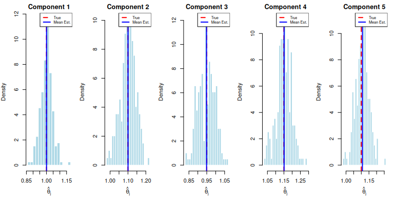
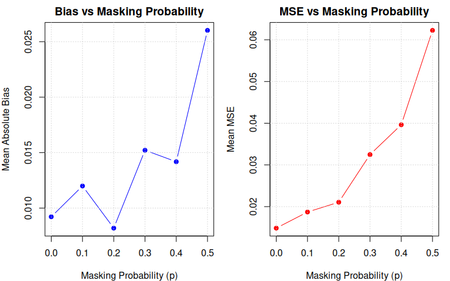
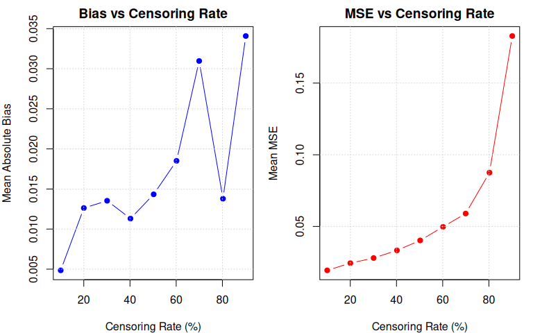

Masked Data Likelihood Model: Components with Exponentially Distributed Lifetimes Arranged In Series Configuration
Source:vignettes/exponential_series.Rmd
exponential_series.RmdThe R package likelihood.model.series.md is a framework
for estimating the parameters of latent component lifetimes from
masked data in a series system.
Exponentially Distributed Component Lifetimes
Consider a series system in which the components have exponentially distributed lifetimes. The component of the has a lifetime distribution given by for . Thus, . The random variable has a reliability, pdf, and hazard function given respectively by where is the lifetime and is the failure rate of the -th component.
The lifetime of the series system composed of components with exponentially distributed lifetimes has a reliability function given by where . A series system with exponentially distributed lifetimes is also exponentially distributed.The series system’s failure rate function is given by whose proof follows from the series system failure rate theorem.
We see that the system failure rate is constant, consistent with the exponential distribution being the only continuous distribution that has a constant failure rate.
The pdf of the series system is given by where is the lifetime of the system. The conditional probability that component is the cause of a system failure at time is given by where and . Due to the constant failure rates of the components, and are mutually independent. The joint pdf of and is given by where and .Likelihood Model
In this study, the system is a series system with components. The true DGP for the system lifetime is in the exponential series system family, i.e., the component lifetimes are exponentially and independently distributed and we denote the true parameter value by .
The principal object of study is , which in the case of the exponential series system family consists of rate (scale) parameters for each component lifetime, .
We are interested in estimating the from masked data. The masking comes in two independent forms:
Censored system failure times, e.g., right-censoring. The system failure time is the minimum of the component lifetimes, and it is right-censored if the system failure time does not occur during the observation period, where is the right-censoring time for the observation and are the component lifetimes for the th system.
The cause of failure, the failed component, is masked. This masking comes in the form of a candidate set that, on average, conveys information about the component cause of failure.
The candidate set is a random variable that is a subset of . The true DGP for the candidate set model has a general form that may be denoted by
This is a pretty complicated looking model, and we are not even interested in the DGP for candidate sets, except to the extent that it affects the sampling distribution of the MLE for .
In theory, given some candidate set model, we could construct a joint likelihood function for the full model and jointly estimate the parameters of both the candidate set model and . In practice, however, this could be a very challenging task unless we make some simplifying assumptions about the DGP for candidate sets.
Candidate set models
In every model we consider, we assume that the candidate set is only a function of the component lifetimes , , and the right-censoring time . That is, the candidate set is independent of any other factors (or held constant for the duration of the experiment), like ambient temperature, and these factors also have a negligible effect on the series system lifetime and thus we can ignore them.
Reduced likelihood model
In the Bernoulli candidate set model, we make the following assumptions about how candidate sets are generated:
: The index of the failed component is in the candidate set, i.e., , where .
: The probability of given and is equally probable when the failed component varies over the components in the candidate set, i.e., for any .
: The masking probabilities are conditionally independent of given and , i.e., is not a function of .
Using these simplifying assumptions, we can arrive at a reduced likelihood function that only depends on and the observed data and as long as our candidate set satisfies conditions , , and , our reduced likelihood function obtains the same MLEs as the full likelihood function.
We see that since the probability cannot depend on by condition and cannot depend on by condition . Thus, we can write the likelihood function as
We show that is proportional to and thus the reduced likelihood is proportional to the full likelihood, yielding the same MLEs.
Note, however, that different ways in which the conditions are met will yield MLEs with different sampling distributions, e.g., more or less efficient estimators.
Simulation
The most straightforward series system to estimate is the series system with exponentially distributed component lifetimes.
Suppose an exponential series system with components is parameterized by the following R code:
So, in our study, . The component assigned to index has an exponentially distributed lifetime with a failure rate , e.g., is the failure rate of the component indexed by .
Let’s simulate generating the lifetimes of the components for this series system:
set.seed(7231) # set seed for reproducibility
n <- 7500
comp_times <- matrix(nrow=n,ncol=m)
for (j in 1:m)
comp_times[,j] <- rexp(n,theta[j])
comp_times <- md_encode_matrix(comp_times,"t")
head(comp_times, 4)
#> t1 t2 t3 t4 t5
#> 1 2.953 1.67343 0.7765 0.04761 0.3798
#> 2 1.099 2.20079 2.5923 3.26549 0.6260
#> 3 1.202 0.09557 3.7371 1.80056 2.1282
#> 4 1.443 0.04595 0.1229 0.52177 0.1025Next, we use the function
md_series_lifetime_right_censoring to decorate the masked
data with the right-censor-censoring time chosen by the probability
:
q <- 0.25
tau <- rep(-(1/sum(theta))*log(q),n)
data <- comp_times %>% md_series_lifetime_right_censoring(tau)
latent <- attr(data, "latent")
head(data[, !colnames(data) %in% latent], 4)
#> t delta
#> 1 0.04761 TRUE
#> 2 0.26156 FALSE
#> 3 0.09557 TRUE
#> 4 0.04595 TRUEMasked component cause of failure
We simulate candidate sets using the Bernoulli candidate model with an appropriate set of parameters to satisfy conditions , , and :
p <- .3
data <- data %>% md_bernoulli_cand_c1_c2_c3(p)
head(data[, paste0("q", 1:m)], 4)
#> q1 q2 q3 q4 q5
#> 1 0.3 0.3 0.3 1.0 0.3
#> 2 0.0 0.0 0.0 0.0 0.0
#> 3 0.3 1.0 0.3 0.3 0.3
#> 4 0.3 1.0 0.3 0.3 0.3Now, to generate candidate sets, we sample from these probabilities:
data <- data %>% md_cand_sampler()
data$omega <- ifelse(data$delta, "exact", "right")
display <- md_boolean_matrix_to_charsets(data, drop_set = TRUE)
latent <- attr(display, "latent")
head(display[, !colnames(display) %in% latent], 6)
#> t1 t2 t3 t4 t5 t delta q1 q2 q3 q4 q5 omega
#> 1 2.953 1.67343 0.7765 0.04761 0.3798 0.04761 TRUE 0.3 0.3 0.3 1.0 0.3 exact
#> 2 1.099 2.20079 2.5923 3.26549 0.6260 0.26156 FALSE 0.0 0.0 0.0 0.0 0.0 right
#> 3 1.202 0.09557 3.7371 1.80056 2.1282 0.09557 TRUE 0.3 1.0 0.3 0.3 0.3 exact
#> 4 1.443 0.04595 0.1229 0.52177 0.1025 0.04595 TRUE 0.3 1.0 0.3 0.3 0.3 exact
#> 5 2.409 0.46744 0.5819 0.02899 0.2009 0.02899 TRUE 0.3 0.3 0.3 1.0 0.3 exact
#> 6 4.400 1.92722 0.3933 1.56782 0.1597 0.15967 TRUE 0.3 0.3 0.3 0.3 1.0 exact
#> x
#> 1 {1, 4}
#> 2 {}
#> 3 {2, 4}
#> 4 {1, 2, 3}
#> 5 {4, 5}
#> 6 {2, 5}We see that after dropping latent (unobserved) columns, we only have
the right censoring time, right censoring indicator, and the candidate
sets. (Note that this time we showed the candidate sets in a more
friendly way using md_boolean_matrix_to_charsets.)
Constructing the Likelihood Model
The likelihood model is a statistical model that describes the distribution of the observed data as a function of the parameters of interest.
We construct a likelihood model for the masked data model with exponentially distributed component lifetimes with the following code:
model <- exp_series_md_c1_c2_c3()Maximum likelihood estimation
The log-likelihood for our masked data model under masking conditions C1 (failed component in candidate set), C2 (uniform candidate set probability), and C3 (masking independent of parameters) is given byThe set of solutions to the MLE equations must be stationary points, i.e., a point at which the score function of type is zero. The -th component of the output of the score function is given by
We may find an MLE by solving the score equation, i.e., finding stationary points satisfying for . We approximate a solution to this problem by using the iterative Newton-Raphson method.
The Newton-Raphson method needs the observed information matrix, which is a function of of type . The -th element of is given by
Log-likelihood of given masked data
The reduced log-likelihood function (the log of the kernel of the likelihood function) is given by
We compute the log-likelihood function using generic dispatch:
ll <- loglik(model)The returned function ll(df, par) evaluates the
log-likelihood at parameter par given data df.
For example, at the true parameter value:
ll(data, theta)
#> [1] -1393Note that the implementation uses minimally sufficient statistics, which improves computational efficiency.
The log-likelihood function contains the maximum amount of
information about parameter
given the sample of masked data data satisfying conditions
,
,
and
.
Suppose we do not know that
.
With the log-likelihood, we may estimate
with
by solving
i.e., finding the point that
maximizes the log-likelihood on the observed sample
data. This is known as maximum likelihood
estimation (MLE). We typically solve for the MLE by solving
A popular choice is gradient ascent, which is an iterative method based on the update rule where is the learning rate.
We can also obtain the score (gradient) function via generic dispatch:
grad <- score(model)The score at the true parameter should be close to zero (at the MLE, it is exactly zero):
grad(data, theta)
#> [1] -23.934 -4.920 -9.392 -21.984 -2.042The likelihood.model framework provides analytical score
and Hessian implementations when available, falling back to numerical
differentiation otherwise.
In what follows, we use algebraic.mle to help solve the MLE equations and display various properties of the solution.
To solve the MLE equation, we use the generic fit()
function, which dispatches to fit.likelihood_model for any
object with "likelihood_model" in its class. The
fit() function returns a solver that uses
optim internally with the BFGS method by default.
# Get the solver from the model using generic dispatch
solver <- fit(model)
# Solve for MLE with initial guess
theta0 <- rep(1, m)
estimate <- solver(data, par = theta0, method = "Nelder-Mead")The result is an mle object from the
algebraic.mle package with rich accessor methods:
# Print summary with confidence intervals
print(estimate)
#> Maximum Likelihood Estimate (Fisherian)
#> ----------------------------------------
#> Coefficients:
#> [1] 0.9617 1.1049 0.9455 1.1147 1.1116
#>
#> Log-likelihood: -1392
#> Observations: 7500We can access specific components of the MLE:
# Point estimate
theta.hat <- estimate$par
cat("MLE:", round(theta.hat, 4), "\n")
#> MLE: 0.9617 1.105 0.9455 1.115 1.112
# Standard errors (sqrt of diagonal of variance-covariance matrix)
cat("SE:", round(sqrt(diag(estimate$vcov)), 4), "\n")
#> SE: 0.0442 0.0457 0.0427 0.0449 0.0454
# Log-likelihood at MLE
cat("Log-likelihood:", round(estimate$loglik, 4), "\n")
#> Log-likelihood: -1392Recall that the true parameter is .
Due to sampling variability, different runs of the experiment will result in different outcomes, i.e., has a sampling distribution. We see that , but it is reasonably close. We may measure this sampling variability using the variance-covariance matrix, bias, mean squared error (MSE), and confidence intervals.
Observation Types and Censoring
The likelihood model supports four observation types. Each arises from a different monitoring scheme:
- Exact (): The system failure time is observed directly, e.g., continuous monitoring.
- Right-censored (): The system is known to have survived past , e.g., study ends before failure.
- Left-censored (): The system is known to have failed before , e.g., a single inspection finds it failed.
- Interval-censored (): The failure occurred in , e.g., periodic inspections bracket the failure.
For the exponential series system, the individual-observation log-likelihood contributions are: where and .
The left-censored contribution can be interpreted as , where is the candidate cause weight and is the system CDF.
The exponential model is the only one where all four types
have fully analytical loglik, score, AND Hessian. The Weibull
models require numerical integration or numDeriv for
left/interval types.
Observe functors
The package provides composable observation functors for generating data under different monitoring schemes:
# Periodic inspection every 0.5 time units, study ends at tau = 5
obs_periodic <- observe_periodic(delta = 0.5, tau = 5)
# Single inspection at tau = 3
obs_left <- observe_left_censor(tau = 3)
# Mix of continuous and periodic monitoring
obs_mixed <- observe_mixture(
observe_right_censor(tau = 5),
observe_left_censor(tau = 3),
weights = c(0.7, 0.3)
)Generating mixed-censoring data
gen <- rdata(model)
# Periodic inspections
set.seed(7231)
df_periodic <- gen(theta, n = 500, p = 0.3,
observe = observe_periodic(delta = 0.5, tau = 5))
cat("Periodic inspection observation types:\n")
#> Periodic inspection observation types:
print(table(df_periodic$omega))
#>
#> interval
#> 500
# Mixed monitoring
set.seed(7231)
df_mixed <- gen(theta, n = 500, p = 0.3,
observe = observe_mixture(
observe_right_censor(tau = 5),
observe_left_censor(tau = 3),
weights = c(0.7, 0.3)
))
cat("\nMixed monitoring observation types:\n")
#>
#> Mixed monitoring observation types:
print(table(df_mixed$omega))
#>
#> exact left
#> 344 156Likelihood evaluation on mixed-censoring data
All four observation types contribute analytically to the loglik, score, and Hessian for the exponential model:
ll_fn <- loglik(model)
scr_fn <- score(model)
hess_fn <- hess_loglik(model)
# Evaluate at true parameters
ll_val <- ll_fn(df_periodic, theta)
scr_val <- scr_fn(df_periodic, theta)
hess_val <- hess_fn(df_periodic, theta)
cat("Log-likelihood (periodic):", round(ll_val, 4), "\n")
#> Log-likelihood (periodic): -589.4
cat("Score (periodic):", round(scr_val, 4), "\n")
#> Score (periodic): -21.95 12.48 -8.39 -8.58 4.447
cat("Hessian eigenvalues:", round(eigen(hess_val)$values, 4), "\n")
#> Hessian eigenvalues: -24.44 -34.03 -35.33 -43.87 -56.17We verify that the analytical score is consistent with numerical differentiation:
Monte Carlo simulation study
To understand the sampling properties of the MLE, we conduct a Monte Carlo simulation study. We repeatedly:
- Generate masked data from the true model
- Fit the likelihood model to obtain
- Compute asymptotic confidence intervals
From the collection of estimates, we can compute:
- Bias:
- Variance:
- MSE:
- Coverage probability: Proportion of CIs containing the true value
set.seed(7231)
# Simulation parameters
B <- 200 # Number of Monte Carlo replications
alpha <- 0.05 # Significance level for CIs
# Storage for results
estimates <- matrix(NA, nrow = B, ncol = m)
se_estimates <- matrix(NA, nrow = B, ncol = m)
ci_lower <- matrix(NA, nrow = B, ncol = m)
ci_upper <- matrix(NA, nrow = B, ncol = m)
converged <- logical(B)
for (b in 1:B) {
# Generate component lifetimes
comp_times_b <- matrix(nrow = n, ncol = m)
for (j in 1:m) {
comp_times_b[, j] <- rexp(n, theta[j])
}
comp_times_b <- md_encode_matrix(comp_times_b, "t")
# Apply masking pipeline
data_b <- comp_times_b %>%
md_series_lifetime_right_censoring(tau) %>%
md_bernoulli_cand_c1_c2_c3(p) %>%
md_cand_sampler()
data_b$omega <- ifelse(data_b$delta, "exact", "right")
# Fit model
tryCatch({
result_b <- solver(data_b, par = theta0, method = "Nelder-Mead")
estimates[b, ] <- result_b$par
se_estimates[b, ] <- sqrt(diag(result_b$vcov))
# Asymptotic Wald CIs
z <- qnorm(1 - alpha/2)
ci_lower[b, ] <- result_b$par - z * sqrt(diag(result_b$vcov))
ci_upper[b, ] <- result_b$par + z * sqrt(diag(result_b$vcov))
converged[b] <- result_b$converged
}, error = function(e) {
converged[b] <<- FALSE
})
}
cat("Convergence rate:", mean(converged, na.rm = TRUE), "\n")Bias, Variance, and MSE
# Compute summary statistics (only for converged runs)
valid <- converged & !is.na(estimates[, 1])
est_valid <- estimates[valid, , drop = FALSE]
bias <- colMeans(est_valid) - theta
variance <- apply(est_valid, 2, var)
mse <- bias^2 + variance
rmse <- sqrt(mse)
# Create results table
results_df <- data.frame(
Component = 1:m,
True = theta,
Mean_Est = colMeans(est_valid),
Bias = bias,
Variance = variance,
MSE = mse,
RMSE = rmse,
Rel_Bias_Pct = 100 * bias / theta
)
knitr::kable(results_df, digits = 4,
caption = "Monte Carlo Results: Bias, Variance, and MSE",
col.names = c("Component", "True θ", "Mean θ̂", "Bias",
"Variance", "MSE", "RMSE", "Rel. Bias %"))| Component | True θ | Mean θ̂ | Bias | Variance | MSE | RMSE | Rel. Bias % |
|---|---|---|---|---|---|---|---|
| 1 | 1.00 | 1.000 | 0.0005 | 0.0019 | 0.0019 | 0.0439 | 0.0464 |
| 2 | 1.10 | 1.100 | 0.0004 | 0.0018 | 0.0018 | 0.0425 | 0.0406 |
| 3 | 0.95 | 0.949 | -0.0010 | 0.0021 | 0.0021 | 0.0463 | -0.1064 |
| 4 | 1.15 | 1.151 | 0.0011 | 0.0021 | 0.0021 | 0.0453 | 0.0963 |
| 5 | 1.10 | 1.107 | 0.0073 | 0.0020 | 0.0020 | 0.0452 | 0.6665 |
Confidence Interval Coverage
The asymptotic % Wald confidence interval is:
We assess coverage probability: the proportion of intervals that contain the true parameter value.
# Compute coverage for each component
coverage <- numeric(m)
for (j in 1:m) {
valid_j <- valid & !is.na(ci_lower[, j]) & !is.na(ci_upper[, j])
covered <- (ci_lower[valid_j, j] <= theta[j]) & (theta[j] <= ci_upper[valid_j, j])
coverage[j] <- mean(covered)
}
# Mean CI width
mean_width <- colMeans(ci_upper[valid, ] - ci_lower[valid, ], na.rm = TRUE)
coverage_df <- data.frame(
Component = 1:m,
True = theta,
Coverage = coverage,
Nominal = 1 - alpha,
Mean_Width = mean_width
)
knitr::kable(coverage_df, digits = 4,
caption = paste0("Coverage Probability of ", 100*(1-alpha), "% Confidence Intervals"),
col.names = c("Component", "True θ", "Coverage", "Nominal", "Mean Width"))| Component | True θ | Coverage | Nominal | Mean Width |
|---|---|---|---|---|
| 1 | 1.00 | 0.9444 | 0.95 | 0.1725 |
| 2 | 1.10 | 0.9646 | 0.95 | 0.1775 |
| 3 | 0.95 | 0.9545 | 0.95 | 0.1697 |
| 4 | 1.15 | 0.9343 | 0.95 | 0.1797 |
| 5 | 1.10 | 0.9495 | 0.95 | 0.1776 |
Sampling Distribution Visualization
# Plot sampling distributions
par(mfrow = c(1, min(m, 5)), mar = c(4, 4, 2, 1))
for (j in 1:min(m, 5)) {
hist(est_valid[, j], breaks = 20, probability = TRUE,
main = paste0("Component ", j),
xlab = expression(hat(theta)[j]),
col = "lightblue", border = "white")
abline(v = theta[j], col = "red", lwd = 2, lty = 2)
abline(v = mean(est_valid[, j]), col = "blue", lwd = 2)
legend("topright", legend = c("True", "Mean Est."),
col = c("red", "blue"), lty = c(2, 1), lwd = 2, cex = 0.7)
}
Summary
The Monte Carlo simulation (, , , censoring) demonstrates that the MLE for the exponential series system with masked data satisfying conditions C1–C3 has desirable large-sample properties:
Essentially unbiased. All relative biases are below 0.7%, with the largest being component 5 at 0.67%. The squared-bias contribution to MSE is negligible (e.g., component 1: vs ). The MLE is consistent and approximately unbiased at this sample size.
Uniform relative precision. RMSE ranges from 0.042 to 0.046 across components — roughly 4–5% of the true rates. This uniformity is consistent with the asymptotic efficiency of the MLE: components with higher failure rates (and thus higher variance) also have proportionally wider CIs.
Coverage near nominal. Coverage ranges from 93.4% to 96.5% against a nominal 95%. Component 4 (93.4%) slightly undercovers, suggesting the Wald interval may be mildly liberal for some components at this sample size. This is a known finite-sample property of Wald intervals for rate parameters.
CI width as a design metric. Mean CI widths of 0.170–0.180 (about of the true rate) provide a concrete basis for sample size planning. Since CI width scales as , halving the width requires roughly the sample size.
Sensitivity Analysis
The MLE properties depend on several factors: sample size, masking probability, and right-censoring rate. In this section, we study how these factors affect estimation accuracy.
Effect of Masking Probability
The masking probability controls how much information about the failed component is obscured. When , only the failed component is in the candidate set (perfect information). As increases, more non-failed components are included, making estimation more difficult.
set.seed(7231)
# Use smaller sample for sensitivity study
n_sens <- 500
B_sens <- 100
# Masking probabilities to test
p_values <- seq(0, 0.5, by = 0.1)
# Fixed right-censoring (25% censored)
q_sens <- 0.25
tau_sens <- rep(-(1/sum(theta))*log(q_sens), n_sens)
# Storage
mask_results <- list()
for (p_idx in seq_along(p_values)) {
p_curr <- p_values[p_idx]
est_p <- matrix(NA, nrow = B_sens, ncol = m)
for (b in 1:B_sens) {
# Generate data
comp_b <- matrix(nrow = n_sens, ncol = m)
for (j in 1:m) comp_b[, j] <- rexp(n_sens, theta[j])
comp_b <- md_encode_matrix(comp_b, "t")
data_b <- comp_b %>%
md_series_lifetime_right_censoring(tau_sens) %>%
md_bernoulli_cand_c1_c2_c3(p_curr) %>%
md_cand_sampler()
data_b$omega <- ifelse(data_b$delta, "exact", "right")
tryCatch({
fit_b <- solver(data_b, par = theta0, method = "Nelder-Mead")
if (fit_b$converged) est_p[b, ] <- fit_b$par
}, error = function(e) NULL)
}
# Compute statistics
valid_p <- !is.na(est_p[, 1])
mask_results[[p_idx]] <- list(
p = p_curr,
bias = colMeans(est_p[valid_p, , drop = FALSE]) - theta,
variance = apply(est_p[valid_p, , drop = FALSE], 2, var),
mse = (colMeans(est_p[valid_p, , drop = FALSE]) - theta)^2 +
apply(est_p[valid_p, , drop = FALSE], 2, var)
)
}
# Extract bias and MSE for plotting
bias_mat <- sapply(mask_results, function(x) mean(abs(x$bias)))
mse_mat <- sapply(mask_results, function(x) mean(x$mse))
par(mfrow = c(1, 2), mar = c(4, 4, 2, 1))
# Mean absolute bias vs masking probability
plot(p_values, bias_mat, type = "b", pch = 19, col = "blue",
xlab = "Masking Probability (p)",
ylab = "Mean Absolute Bias",
main = "Bias vs Masking Probability")
grid()
# Mean MSE vs masking probability
plot(p_values, mse_mat, type = "b", pch = 19, col = "red",
xlab = "Masking Probability (p)",
ylab = "Mean MSE",
main = "MSE vs Masking Probability")
grid()
mask_df <- data.frame(
p = p_values,
Mean_Abs_Bias = bias_mat,
Mean_MSE = mse_mat,
Mean_RMSE = sqrt(mse_mat)
)
knitr::kable(mask_df, digits = 4,
caption = "Effect of Masking Probability on Estimation Accuracy",
col.names = c("Masking Prob.", "Mean |Bias|", "Mean MSE", "Mean RMSE"))| Masking Prob. | Mean |Bias| | Mean MSE | Mean RMSE |
|---|---|---|---|
| 0.0 | 0.0092 | 0.0148 | 0.1218 |
| 0.1 | 0.0120 | 0.0187 | 0.1368 |
| 0.2 | 0.0082 | 0.0211 | 0.1451 |
| 0.3 | 0.0152 | 0.0325 | 0.1802 |
| 0.4 | 0.0142 | 0.0396 | 0.1991 |
| 0.5 | 0.0260 | 0.0623 | 0.2495 |
The simulation reveals several patterns in how masking degrades estimation quality:
MSE increases monotonically from 0.015 () to 0.062 () — a degradation. RMSE roughly doubles from 0.12 to 0.25, meaning the typical estimation error doubles when moving from unmasked to maximally masked candidate sets.
Variance drives the degradation, not bias. Mean fluctuates between 0.008 and 0.026 with no systematic trend, while variance grows steadily with . This is consistent with the theoretical result that conditions C1–C3 preserve the unbiasedness of the MLE — masking erodes precision without introducing systematic error.
The marginal cost of masking accelerates. MSE roughly doubles from to (), then roughly doubles again from to (). For practitioners, this means moderate masking () is far less costly than heavy masking.
Residual MSE at . Even with no masking of non-failed components, MSE of 0.015 remains due to right-censoring alone — a useful baseline for isolating the censoring contribution.
Effect of Right-Censoring Rate
Right-censoring reduces the number of exact failure times observed. When a system is right-censored, we know the system survived beyond the censoring time, but we don’t observe the actual failure time or failed component.
set.seed(7231)
# Censoring quantiles (proportion surviving past tau)
# q = 0.1 means 10% survive past tau (light censoring, ~10% censored)
# q = 0.9 means 90% survive past tau (heavy censoring, ~90% censored)
q_values <- seq(0.1, 0.9, by = 0.1) # Survival probabilities (matches simulation framework)
# Fixed masking probability
p_cens <- 0.2
# Storage
cens_results <- list()
for (q_idx in seq_along(q_values)) {
q_curr <- q_values[q_idx]
tau_curr <- rep(-(1/sum(theta))*log(q_curr), n_sens)
est_q <- matrix(NA, nrow = B_sens, ncol = m)
for (b in 1:B_sens) {
# Generate data
comp_b <- matrix(nrow = n_sens, ncol = m)
for (j in 1:m) comp_b[, j] <- rexp(n_sens, theta[j])
comp_b <- md_encode_matrix(comp_b, "t")
data_b <- comp_b %>%
md_series_lifetime_right_censoring(tau_curr) %>%
md_bernoulli_cand_c1_c2_c3(p_cens) %>%
md_cand_sampler()
data_b$omega <- ifelse(data_b$delta, "exact", "right")
tryCatch({
fit_b <- solver(data_b, par = theta0, method = "Nelder-Mead")
if (fit_b$converged) est_q[b, ] <- fit_b$par
}, error = function(e) NULL)
}
# Compute statistics
valid_q <- !is.na(est_q[, 1])
cens_rate <- mean(data_b$omega == "right") # Actual censoring rate
cens_results[[q_idx]] <- list(
q = q_curr,
cens_rate = cens_rate,
bias = colMeans(est_q[valid_q, , drop = FALSE]) - theta,
variance = apply(est_q[valid_q, , drop = FALSE], 2, var),
mse = (colMeans(est_q[valid_q, , drop = FALSE]) - theta)^2 +
apply(est_q[valid_q, , drop = FALSE], 2, var)
)
}
# Extract statistics
cens_rates <- sapply(cens_results, function(x) x$cens_rate)
bias_cens <- sapply(cens_results, function(x) mean(abs(x$bias)))
mse_cens <- sapply(cens_results, function(x) mean(x$mse))
par(mfrow = c(1, 2), mar = c(4, 4, 2, 1))
# Mean absolute bias vs censoring rate
plot(cens_rates * 100, bias_cens, type = "b", pch = 19, col = "blue",
xlab = "Censoring Rate (%)",
ylab = "Mean Absolute Bias",
main = "Bias vs Censoring Rate")
grid()
# Mean MSE vs censoring rate
plot(cens_rates * 100, mse_cens, type = "b", pch = 19, col = "red",
xlab = "Censoring Rate (%)",
ylab = "Mean MSE",
main = "MSE vs Censoring Rate")
grid()
cens_df <- data.frame(
Cens_Rate_Pct = round(cens_rates * 100, 1),
Mean_Abs_Bias = bias_cens,
Mean_MSE = mse_cens,
Mean_RMSE = sqrt(mse_cens)
)
knitr::kable(cens_df, digits = 4,
caption = "Effect of Right-Censoring Rate on Estimation Accuracy",
col.names = c("Censoring %", "Mean |Bias|", "Mean MSE", "Mean RMSE"))| Censoring % | Mean |Bias| | Mean MSE | Mean RMSE |
|---|---|---|---|
| 10.0 | 0.0049 | 0.0193 | 0.1391 |
| 20.0 | 0.0126 | 0.0244 | 0.1561 |
| 30.1 | 0.0135 | 0.0279 | 0.1672 |
| 40.2 | 0.0113 | 0.0333 | 0.1824 |
| 50.2 | 0.0143 | 0.0402 | 0.2005 |
| 60.2 | 0.0185 | 0.0497 | 0.2230 |
| 69.9 | 0.0310 | 0.0590 | 0.2429 |
| 80.2 | 0.0138 | 0.0876 | 0.2959 |
| 90.1 | 0.0341 | 0.1829 | 0.4276 |
The simulation reveals that censoring is the dominant source of information loss in this model:
MSE grows from 0.019 (10% censored) to 0.183 (90% censored) — a degradation, far exceeding the range from masking. Censoring is more damaging because it eliminates both the failure time and the candidate set, whereas masking only dilutes the candidate set.
Convex MSE growth, accelerating sharply above 70%. MSE grows gradually from 10% to 70% censoring (, roughly linear), then accelerates: at 80% and at 90%. The inflection point is near 70–80% censoring, beyond which each additional percentage point of censoring is dramatically more damaging.
Bias remains modest even under extreme censoring. Mean grows from 0.005 (10% censoring) to 0.034 (90% censoring) but stays small relative to the true rates ( at worst). The MLE remains approximately unbiased — it is consistent but increasingly inefficient.
Robustness under extreme censoring. At 90% censoring, only of 500 observations are exact failures, yet the MLE still converges. The resulting estimates are imprecise (RMSE , or of the true rates), but the likelihood-based approach remains functional.
Practical Recommendations
Based on these sensitivity analyses:
Prioritize reducing censoring over masking. Censoring degrades MSE by across its range versus for masking. In experimental design, extending the observation window to reduce censoring below 50% yields larger gains than improving diagnostic resolution to reduce masking.
Moderate masking is tolerable. MSE only doubles from to . If reducing the masking probability below 0.3 requires expensive diagnostic equipment, the incremental benefit may not justify the cost.
The 70% censoring threshold. Below censoring, MSE growth is roughly linear and moderate. Above 70%, MSE accelerates sharply — avoid experimental designs where more than two-thirds of systems survive past the observation window.
CI widths for sample size planning. At with and 25% censoring, 95% CI widths are for rates near 1.0. Width scales as , so gives widths of (double), and gives (half).